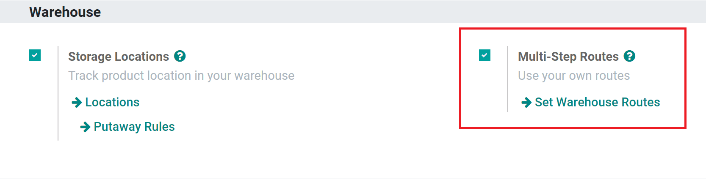
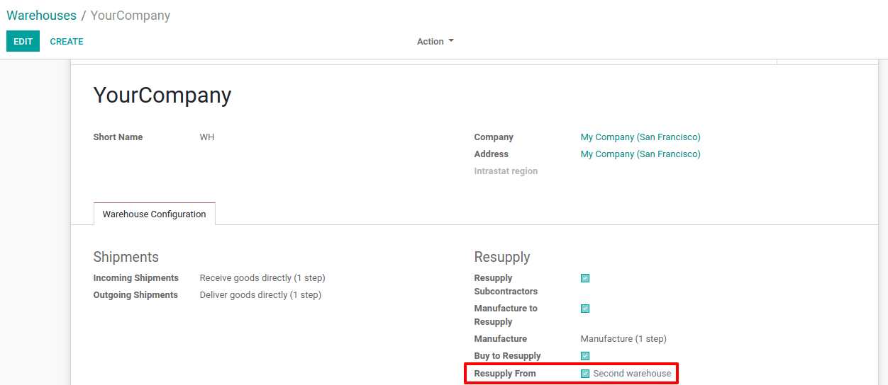
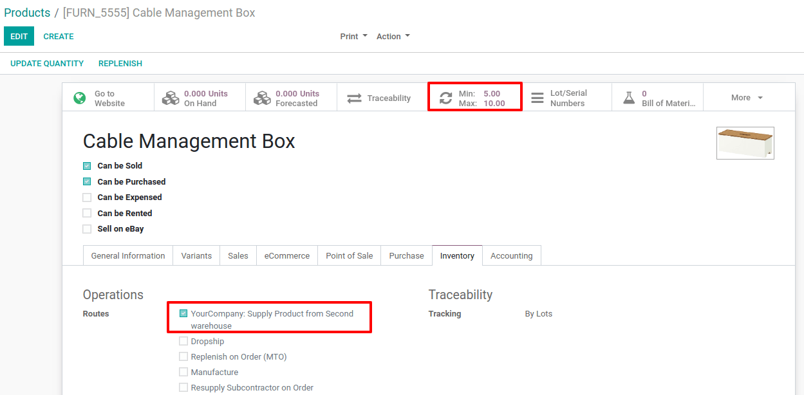
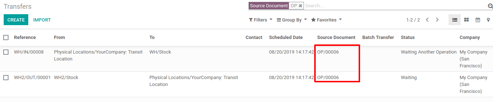
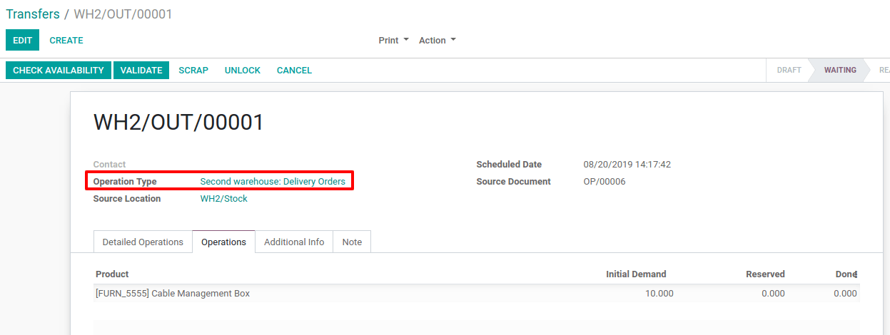
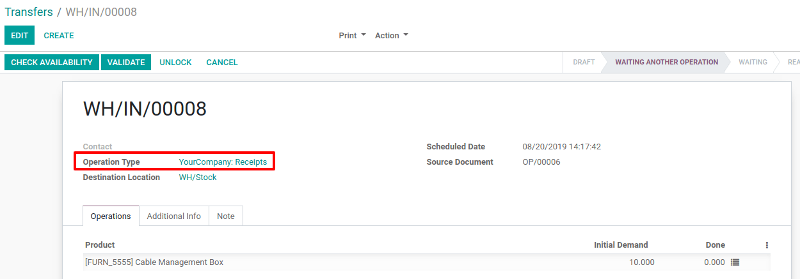

Reabastecer desde otro almacén¶
Cuando utiliza la función de varios almacenes es común tener un almacén principal que reabastece varias tiendas y, en este caso, cada tienda se considera un almacén local. Cuando desea reabastecer un producto en una tienda, el producto se ordena al almacén central. Odoo permite al usuario configurar con facilidad qué almacenes pueden reabastecer a otros.
Configuración¶
Para reabastecer desde otro almacén, primero vaya a y active las rutas multietapa. Luego haga clic en guardar para aplicar el ajuste.
Vaya a para ver todos los almacenes configurados.
Haga clic en crear para crear un nuevo almacén. Después, agregue el nombre del almacén y también su nombre corto. Por último, haga clic en guardar para finalizar la creación del almacén.
Regrese a la página de almacenes, abra el almacén que se reabastecerá de un segundo almacén y luego haga clic en editar. En la pestaña configuración del almacén vaya al campo reabastecer de y seleccione la casilla junto al nombre del segundo almacén. En caso de que pueda hacer el reabastecimiento desde más almacenes, seleccione sus respectivas casillas también. Por último, haga clic en guardar para aplicar el ajuste. Ahora Odoo sabe qué almacenes pueden reabastecer a este almacén.
Establecer una ruta en un producto¶
Una nueva ruta está disponible en todos los formularios de producto después de configurar de qué almacenes se realizarán los reabastecimientos. La nueva ruta aparece como suministrar producto de [nombre del almacén] en la pestaña inventario en el formulario de producto. Utilice la ruta suministrar producto de [nombre del almacén] con una regla de reordenamiento o con la ruta de fabricación sobre pedido para reabastecer las existencias mediante un movimiento de productos de un almacén a otro.
Cuando se activa la regla de reordenamiento de un producto con la ruta suministrar producto de [nombre del almacén] establecida, Odoo crea dos recolecciones de forma automática. Una recolección es una orden de entrega del segundo almacén, el cual contiene todos los productos necesarios; la segunda, es una recepción con los mismos productos desde el almacén principal. Odoo lleva el seguimiento completo del movimiento de producto del segundo almacén al principal.
La regla de reordenamiento del producto es el documento origen que aparece en los registros de recolecciones y traslados creados por Odoo. La ubicación entre la orden de entrega y la recepción es una ubicación de tránsito.
  